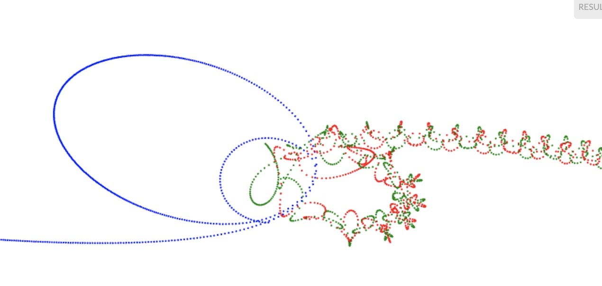

Kendi türünüz: karmaşık sayılar
Kitapçığı kapatmadan bir borcumuz var: kapaktaki Mandelbrot kümesi.
Onun için karmaşık sayılar gerekiyor — ve bu, kendi türünüzü
yazmayı öğrenmenin tam sırası. Scala'da bunun aleti
case class:
case class Karmaşık(g: Kesir, s: Kesir) { // gerçek ve sanal kısım
def +(öbürü: Karmaşık) = Karmaşık(g + öbürü.g, s + öbürü.s)
def *(öbürü: Karmaşık) =
Karmaşık(g * öbürü.g - s * öbürü.s, g * öbürü.s + s * öbürü.g)
def büyüklüğü = karekökü(g * g + s * s)
}
val a = Karmaşık(1, 2)
satıryaz(a + a) // Karmaşık(2.0,4.0)
satıryaz(a * a) // Karmaşık(-3.0,4.0)
+ ve * sıradan yöntem adları — Scala'da
işleçler de birer yöntemdir, C++'taki operator+ gibi ama
daha az törenle. İki satır tanımla, kendi türünüz sayılar kadar rahat
toplanıp çarpılıyor.
Mandelbrot kuralı tek satır: z ← z² + c. Bir
c noktası için sıfırdan başlayıp bu kuralı döndürün;
z büyüyüp kaçarsa c kümenin dışında, yüz adımda
kaçmazsa (bizim kararımızla) içinde:
def kaçışAdımı(c: Karmaşık): Sayı = {
def dön(z: Karmaşık, adım: Sayı): Sayı =
if (adım == 100 || z.büyüklüğü > 2) adım
else dön(z * z + c, adım + 1)
dön(Karmaşık(0, 0), 0)
}
satıryaz(kaçışAdımı(Karmaşık(0, 0))) // 100: hiç kaçmadı, küme içinde
satıryaz(kaçışAdımı(Karmaşık(1, 1))) // 2: iki adımda kaçtı
Resmi çizmek için tuvalin her noktasını bir karmaşık sayıya çevirip
kaçışAdımı'na göre renklendirmek kalıyor: erken kaçan
noktaya açık, geç kaçana koyu bir renk. Bu son adımı
bilerek yazmıyorum — iskeleti kurdunuz, boyası
sizin. Kaplumbağayla atla + nokta ikilisi iş
görür; sabırsızlananlar için tam sürüm Koco'nun örnekleri arasında da var.


kaçışAdımı'nın
boyanmış hâli. Kenarına yaklaştıkça yeni desenler açılır; sınırı hem
var hem yok.

dön(z, adım + 1) kalıbının fizikteki kardeşi.